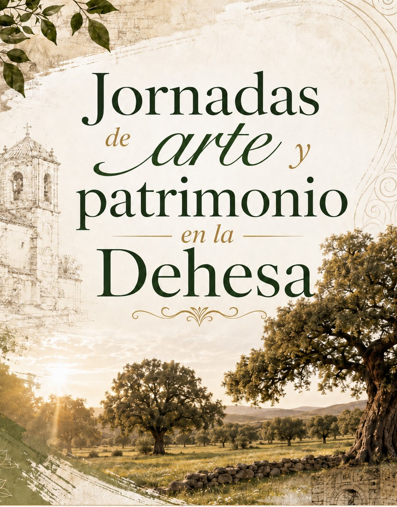

Territorio,
conocimiento,
cultura y
aprendizaje.
VerdeMente es una entidad de gestión social y cultural que desarrolla proyectos de patrimonio vivo, formación, investigación, innovación y cooperación desde el territorio.
Saberes del Territorio
Programa itinerante de transmisión de saberes tradicionales en Extremadura. Siete saberes, siete municipios y una metodología que combina práctica, transmisión intergeneracional, documentación y devolución pública.
Fechas confirmadas: Toque Manual de Campanas · 27 septiembre, Alfarería · 17 octubre, Construcción en tierra · 21 noviembre y Elaboración artesanal de queso · 19 diciembre.

Toque Manual de Campanas
27 septiembre 2026 · 10:00–14:00 · Iglesia de Sierra de Fuentes.
Un taller práctico dedicado a un saber reconocido como Patrimonio Cultural Inmaterial de la Humanidad · UNESCO.

Jornadas de Arte y Patrimonio en la Dehesa
El taller de campanas abre una jornada más amplia de encuentro alrededor del patrimonio, la creación, los saberes y el territorio.